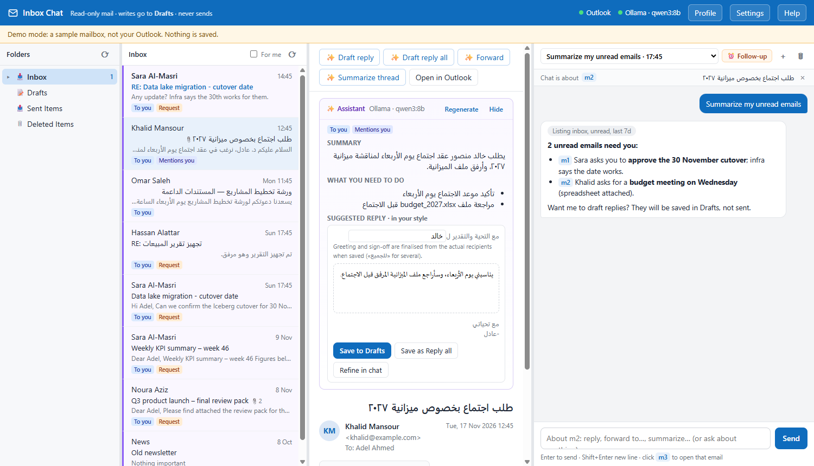

مرحباً بك في Inbox Chat
مساعد ذكي يعمل بجانب بريدك في Outlook الكلاسيكي. اسأله عن بريدك، واطّلع على ملخص ورد مقترح لكل رسالة، واطلب منه كتابة الردود وإعادة التوجيه والرسائل الجديدة، فيحفظها لك مسوداتٍ.
لا يرسل أبداً
يحفظ التطبيق كل ما يكتبه في مجلد المسودات في Outlook، فتقرؤه وتعدّله إن شئت، ثم ترسله بنفسك من Outlook.
أنت تختار النموذج
نموذج محلي عبر Ollama يُبقي البريد داخل شبكتك. ويدعم التطبيق أيضاً النماذج السحابية من OpenAI وAnthropic وGoogle وMoonshot.
بياناتك على هذا الجهاز
يحفظ التطبيق الإعدادات والمحادثات وما يتعلّمه في ملف واحد على هذا الحاسب. راجع البيانات والخصوصية.

النافذة في لمحة
| الجزء | وظيفته |
|---|---|
| الشريط العلوي | ضوءا الحالة: Outlook (الاتصال بصندوق بريدك) وLLM (استجابة نموذج الذكاء الاصطناعي). وتظهر شارة cloud عند استخدام مزوّد سحابي. وفي أقصى يمين الشريط أزرار Profile (الملف الشخصي) وSettings (الإعدادات) وHelp (التعليمات). |
| 1 · المجلدات | مجلدات Outlook مع عدد الرسائل غير المقروءة. انقر مجلداً لعرض رسائله. |
| 2 · الرسائل | الأحدث أولاً. توضّح الشارات ما يخصّك: To you CC Mentions you Department Request. وفعّل For me لإخفاء ما سواها. |
| 3 · جزء القراءة | الرسالة كما يعرضها Outlook، وفي أعلاها لوحة ✨ Assistant (الملخص، والمطلوب منك، والرد المقترح)، ثم المرفقات والرسائل السابقة في المحادثة نفسها. |
| 4 · المساعد | محادثة حول الرسالة المفتوحة أو بريدك كله. تشير الإجابات إلى الرسائل بأرقام مثل m12،
وبالنقر على الرقم تفتح الرسالة. |
اسحب الفواصل الرفيعة بين الأجزاء لتغيير عرضها، ويتذكّر التطبيق تخطيطك.
ابدأ في أربع خطوات
- جهّز Outlook الكلاسيكي. يعمل Inbox Chat مع تطبيق Outlook الكلاسيكي لسطح المكتب. وإذا لم يكن Outlook مفتوحاً، يشغّله التطبيق (مصغّراً) ويتصل به بعد اكتمال تحميله.
- اختر نموذج الذكاء الاصطناعي من Settings: حدّد المزوّد، وتحقّق من عنوان الخادم، والصق مفتاح API إذا كان المزوّد سحابياً، ثم اختر النموذج. طريقة الاختيار ←
- عرّف التطبيق بنفسك في Profile: كيف يظهر اسمك في الرسائل، وفريقك ومجالات عمله، واللغة التي تكتب بها، وعبارتي التحية والختام إن رغبت. دليل الملف الشخصي ←
- افتح رسالة واسأل. اقرأ لوحة ✨، أو اكتب في المحادثة مثلاً: «لخّص هذه المراسلة» أو «ردّ بأن الأربعاء مناسب». يحفظ التطبيق الرد في المسودات. دليل الاستخدام ←
المتطلبات
- Windows 10 أو 11 (مكوّن WebView2 جزء من Windows 11 والإصدارات الحالية من Windows 10).
- Outlook الكلاسيكي، أي تطبيق سطح المكتب، مع إعداد صندوق بريدك. أما Outlook الجديد فلا يسمح للبرامج الأخرى بالتعامل معه، ولذلك لا يدعمه التطبيق.
- نموذج ذكاء اصطناعي: Ollama على هذا الجهاز أو على خادم في شبكتك، أو حساب لدى مزوّد سحابي.
- لا حاجة إلى تثبيت ولا إلى صلاحيات مدير النظام: يعمل الملف
InboxChat.exeمباشرة.
جرّبه دون بريدك
شغّل التطبيق بالأمر InboxChat.exe --demo لاستكشاف صندوق بريد تجريبي. لا يتعامل الوضع التجريبي مع Outlook ولا يحفظ أي شيء.
إلى أين بعد ذلك؟
دليل الاستخدام
قراءة البريد، ولوحة ✨، والمحادثة، والمسودات، والمتابعات.
الإعداد
مزوّدو الذكاء الاصطناعي، وملفك الشخصي وأسلوب كتابتك، وملفات الإعدادات.
البيانات والخصوصية
مكان ملف بياناتك، وما يغادر جهازك، والنسخ الاحتياطي.
حل المشكلات
أضواء الحالة، والتنبيهات الأمنية، وبطء الإجابات.
اضغط F1 في أي مكان في التطبيق لفتح هذه التعليمات، وEsc لإغلاقها.